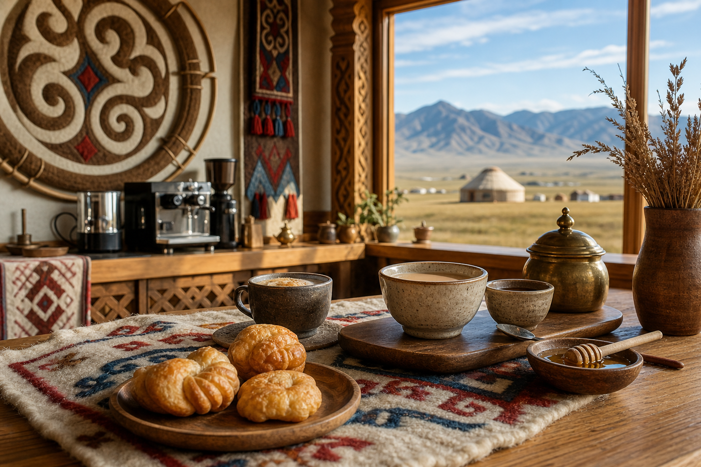

Steppe Latte
Espresso with steamed milk, wildflower honey, and a soft spice finish.
A calm cafe shaped by felt textures, carved wood, mountain air, coffee, milk tea, and fresh morning bakes.
View Menu
Find us on Maple Street, two blocks from the market. Sit near the woven wall panels, take a cup to go, or stay for a quiet breakfast.